Enterprise Customer Relationship Management, Accounting, HR, Procurement, Multi-Tenancy & Business Intelligence Platform
Melitech CRM is an enterprise-grade, multi-tenant Customer Relationship Management platform built for organisations operating across East Africa and beyond. It unifies client management, invoicing, accounting, human resources, procurement, project management, communications, and business intelligence into a single, cohesive web application.
Full lifecycle client records, custom fields, organisation linkages, activity timelines, and bulk operations.
Invoices, recurring billing, estimates, quotations, sales pipeline, opportunities, credit/debit notes, and receipts.
Chart of Accounts, payments, expenses, budgets, bank reconciliation, tax compliance, and financial forecasting.
Employee management, departments, attendance, payroll with Kenyan tax engine, leave management, job groups, performance reviews.
Suppliers, LPOs, purchase orders, GRNs, inventory management, delivery notes, and imprests.
Projects with milestones, work orders, time tracking, service invoices, and project analytics.
Enterprise multi-organisation support with tenant isolation, pricing tiers, feature flags, and centralised communications.
Advanced reports, KPI tracking, report builder, revenue forecasting, conversion analytics, and real-time dashboards.
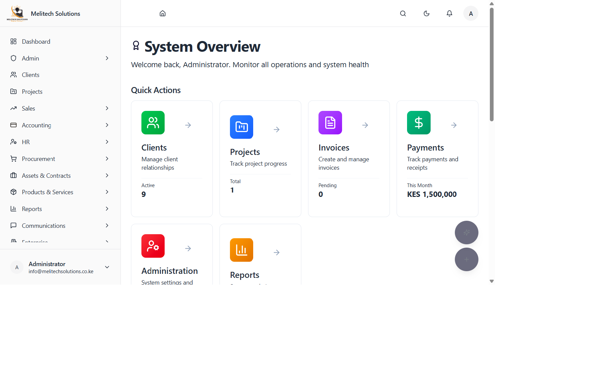
| Layer | Technology | Details |
|---|---|---|
| Frontend | React 18 + TypeScript | Single Page Application with Vite build tool |
| UI Framework | Tailwind CSS + shadcn/ui | Radix primitives, custom theme engine |
| Charts | Recharts | Interactive graphs, dashboards, analytics |
| API Layer | tRPC v11 | End-to-end type-safe RPC with Zod validation |
| Backend | Node.js + Express | REST + tRPC hybrid, JWT authentication |
| ORM | Drizzle ORM | Type-safe MySQL queries, migration system |
| Database | MySQL 8 | utf8mb4 collation, JSON columns, full-text search |
| Payments | Stripe + M-Pesa | Card payments, STK push mobile money |
| Icons | Lucide React | Consistent icon set across all modules |
| Deployment | Docker | Multi-container with docker-compose |
| Entity Group | Tables | Key Relationships |
|---|---|---|
| Authentication | users, sessions, password_resets | users → organizations |
| CRM | clients, contacts, activities, custom_fields | clients → organizations, contacts → clients |
| Sales | invoices, invoice_items, estimates, opportunities, receipts, credit_notes, debit_notes | invoices → clients, items → invoices |
| Accounting | payments, expenses, chart_of_accounts, budgets, bank_reconciliation | payments → invoices, expenses → categories |
| HR | employees, departments, attendance, payroll, leave_requests, job_groups | employees → departments, payroll → employees |
| Procurement | suppliers, lpos, grn, inventory, delivery_notes | lpos → suppliers, grn → lpos |
| Projects | projects, milestones, work_orders, time_tracking | milestones → projects, work_orders → projects |
| Multi-Tenancy | organizations, organization_features, pricing_tier_features, tenant_messages | org_features → organizations, users → organizations |
Melitech CRM provides role-specific dashboards tailored to each user type. Upon login, users are automatically routed to their personalised dashboard with relevant metrics, quick actions, and module shortcuts.
| Role | Dashboard Route | Key Widgets |
|---|---|---|
| Super Admin | /crm/super-admin | Organisation stats, system health, user metrics, revenue overview, all modules |
| Admin | /crm/admin | User management, approvals, full module access |
| HR Manager | /crm/hr | Employee count, attendance today, leave requests, payroll summary |
| Accountant | /crm/accountant | Revenue overview, outstanding invoices, expense tracking, P&L |
| Project Manager | /crm/project-manager | Active projects, milestones, team workload, deadlines |
| Procurement | /crm/procurement | Pending LPOs, inventory alerts, supplier metrics |
| Sales Manager | /crm/sales | Pipeline value, conversion rates, top clients, forecasts |
| ICT Manager | /crm/ict | System health, tickets, integrations status |
| Staff | /crm/staff | My tasks, attendance, leave balance, team chat |
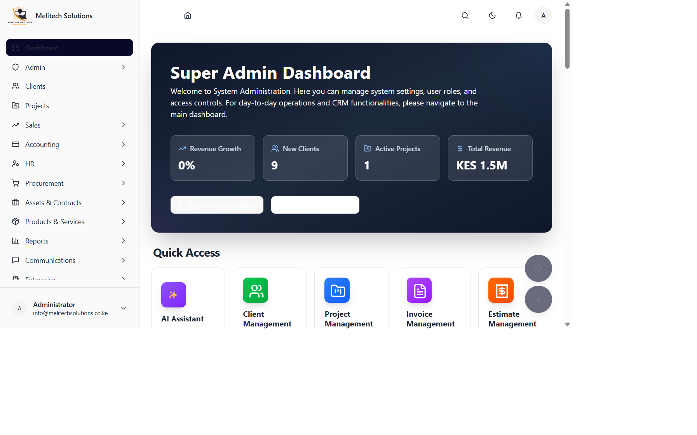
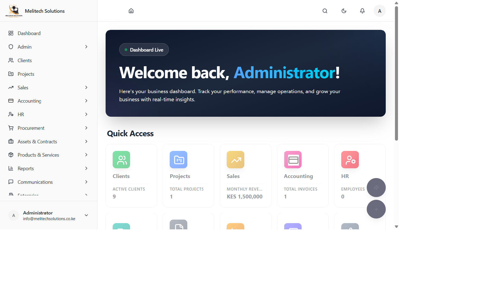
The collapsible sidebar adapts to the user's role, showing only modules the user has permission to access. Super admins see the full navigation with 14 top-level sections and 80+ sub-items.
| Section | Sub-Items | Description |
|---|---|---|
| Dashboard | 1 | Role-specific home dashboard |
| Admin | 2 | User management, approvals |
| Clients | 1 | Client directory and management |
| Projects | 1 | Project management hub |
| Sales | 11 | Invoices, estimates, quotations, receipts, pipeline, credit/debit notes |
| Accounting | 11 | Payments, expenses, CoA, reconciliation, budgets, tax, billing |
| HR | 7 | Employees, departments, attendance, payroll, leave, reviews |
| Procurement | 7 | Suppliers, LPOs, orders, imprests, inventory, delivery, GRNs |
| Assets & Contracts | 4 | Assets, contracts, warranty, work orders |
| Products & Services | 3 | Products, services, service templates |
| Reports | 9 | Financial, sales, HR, KPI, report builder, activity trail |
| Communications | 5 | Email, tickets, notifications, team chat, AI assistant |
| Enterprise | 5 | Multi-tenancy, tenant admins, pricing, comms, settings |
| Tools | 14 | System settings, backups, themes, custom fields, workflows, integrations |
The CRM module is the core of client relationship tracking. It provides a comprehensive client registry with full contact details, activity history, associated invoices, projects, and customisable fields.
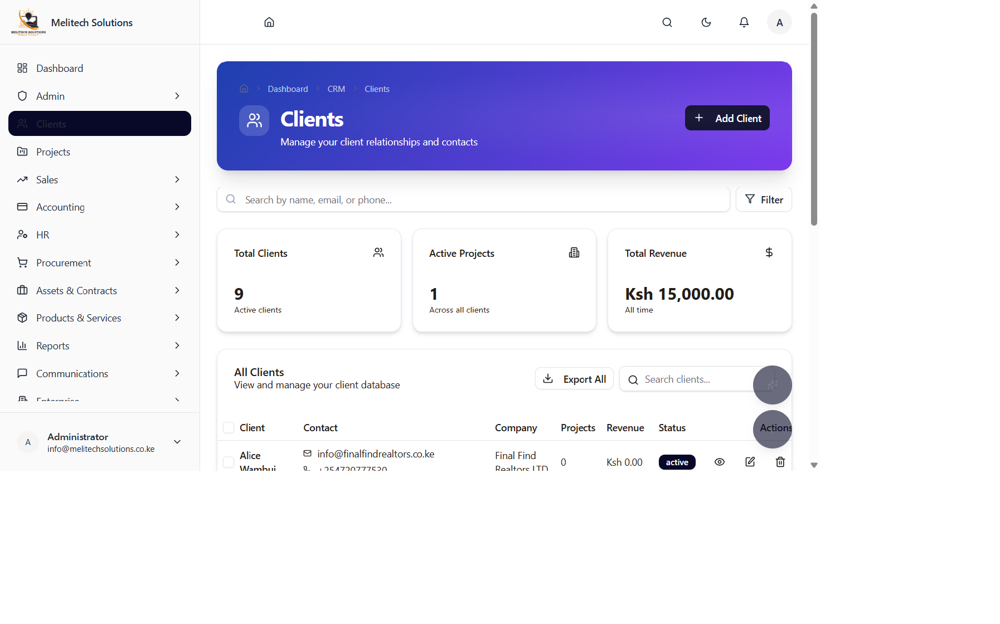
| Field | Type | Description |
|---|---|---|
| Name | Text | Client or company name |
| Primary contact email | ||
| Phone | Phone | Contact phone number |
| Company | Text | Associated company name |
| Status | Enum | Active, Inactive, Lead, Prospect |
| Country / Address | Text | Physical location details |
| KRA PIN | Text | Tax identification (Kenya) |
| Custom Fields | Dynamic | User-defined fields with validation |
The Sales module covers the complete revenue lifecycle from opportunity identification through quotation, invoicing, payment collection, and receipt generation.
Create, send, and track invoices with automatic tax calculation, line item management, payment tracking and overdue alerts.
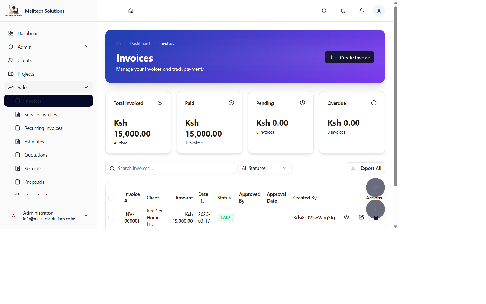
Visual Kanban-style pipeline for tracking deals through stages. Each opportunity records value, probability, expected close date, and associated contacts.
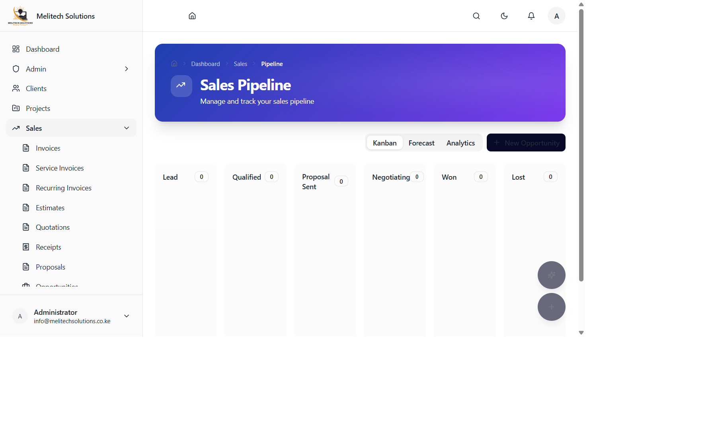
Generate professional estimates that can be converted to invoices with a single click. Track estimate status (Draft → Sent → Accepted → Converted).
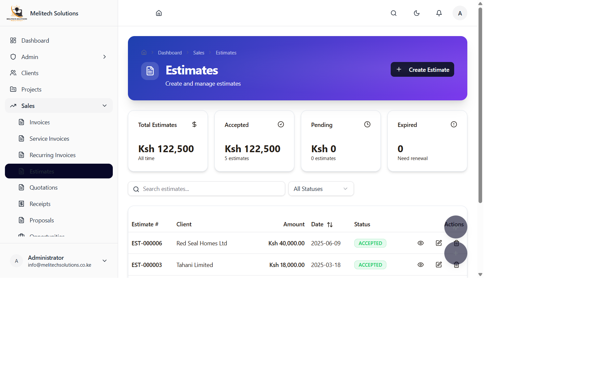
Issue credit notes for returns or adjustments, and debit notes for additional charges. Both link back to the original invoice for audit trail.
Auto-generated receipts upon payment confirmation. Supports manual receipt creation with configurable templates.
| Sub-Module | Route | Key Actions |
|---|---|---|
| Invoices | /invoices | Create, Edit, Send, Track Payments, Export |
| Service Invoices | /service-invoices | Service-based billing with templates |
| Recurring Invoices | /recurring-invoices | Automated periodic billing |
| Estimates | /estimates | Create, Send, Convert to Invoice |
| Quotations | /quotations | Formal price quotes for clients |
| Receipts | /receipts | Payment confirmation documents |
| Proposals | /proposals | Business proposal generation |
| Opportunities | /opportunities | Deal tracking with pipeline stages |
| Sales Pipeline | /sales-pipeline | Visual Kanban deal management |
| Credit Notes | /credit-notes | Client credit adjustments |
| Debit Notes | /debit-notes | Additional charge documents |
A full-featured accounting module with double-entry bookkeeping, bank reconciliation, budgeting, and Kenyan tax compliance built in.
Hierarchical account structure supporting Assets, Liabilities, Equity, Revenue, and Expense categories with sub-accounts.
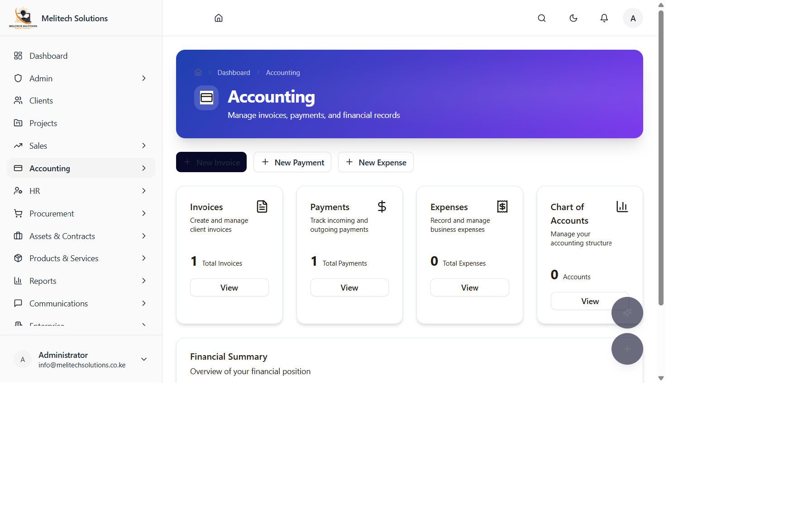
Record and track all incoming and outgoing payments with multiple payment method support (Bank Transfer, M-Pesa, Stripe, Cash, Cheque).
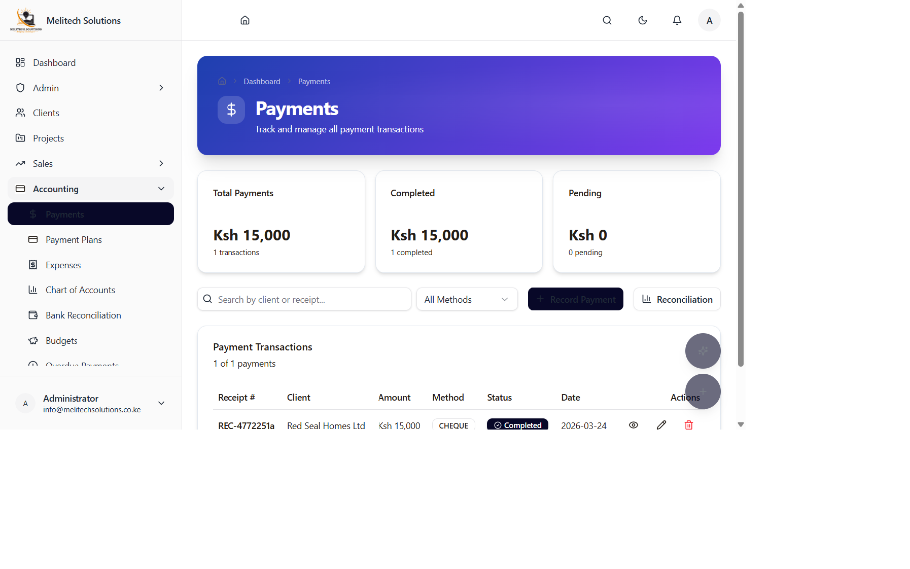
Track business expenses by category, department, and project. Supports receipt uploads, approval workflows, and expense reports.
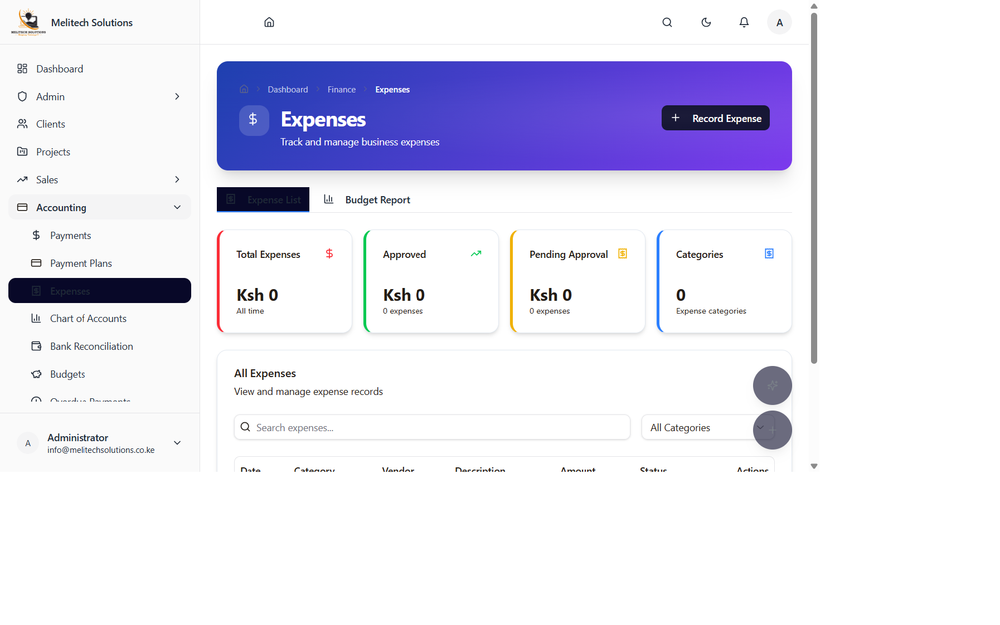
Create department and project budgets, track actual spend vs. budget, and receive alerts when thresholds are exceeded.
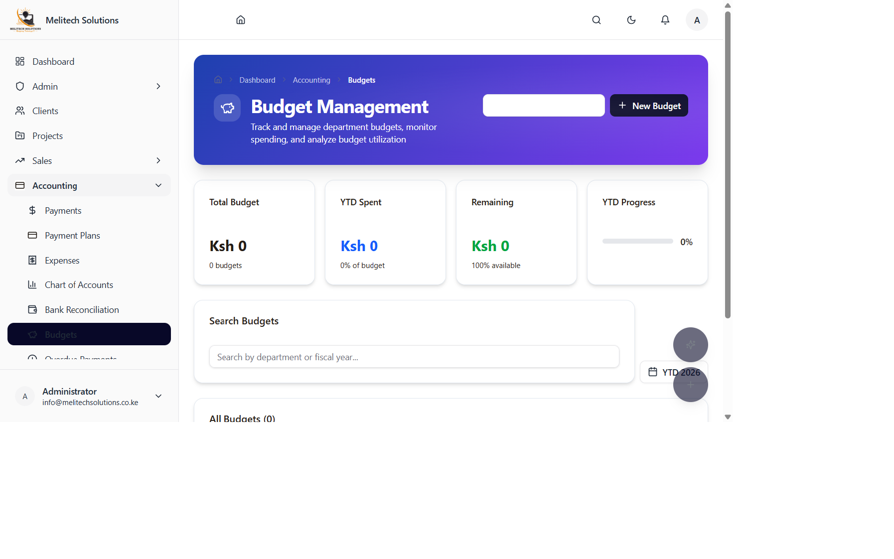
| Tool | Route | Description |
|---|---|---|
| Bank Reconciliation | /bank-reconciliation | Match bank transactions with system records |
| Budgets | /budgets | Department/project budget creation and tracking |
| Tax Compliance | /payroll/tax-compliance | KRA tax reports, P9 forms, PAYE summaries |
| Financial Dashboard | /financial-dashboard | Real-time P&L, cash flow, revenue charts |
| Forecasting | /forecasting | Revenue and expense projections |
| Billing | /billing | Subscription and recurring charge management |
| Overdue Payments | /payments/overdue | Aged receivables with follow-up actions |
| Payment Plans | /payment-plans | Instalment schedules and tracking |
End-to-end HR management from recruitment through payroll processing. Includes Kenyan payroll compliance with PAYE, NHIF, NSSF, and Housing Levy calculations.
Comprehensive employee records with personal details, employment history, documents, and role assignments.
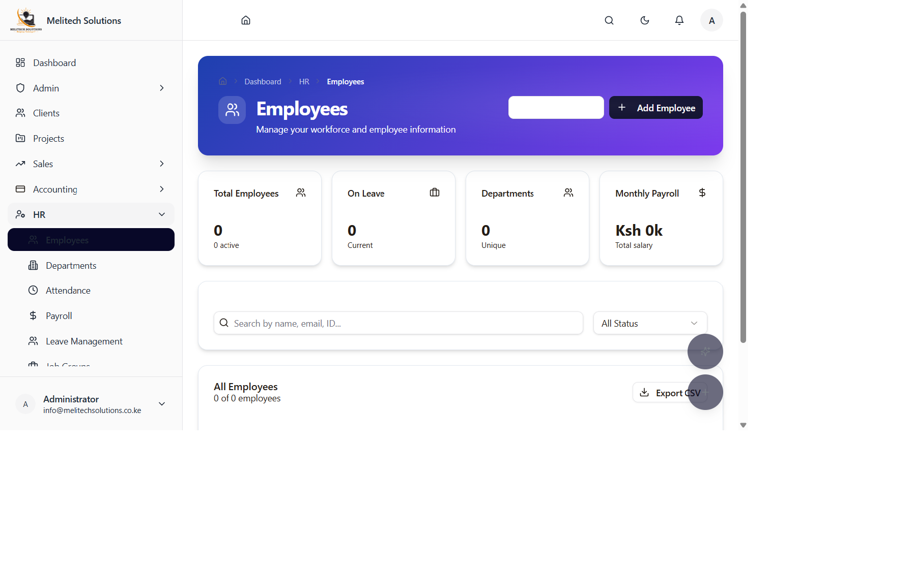
Daily attendance tracking with clock-in/clock-out, overtime calculation, and attendance analytics.
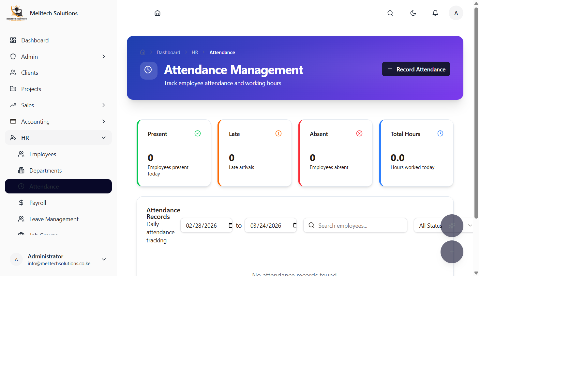
Full payroll processing with automatic statutory deduction calculations for Kenyan employment law.
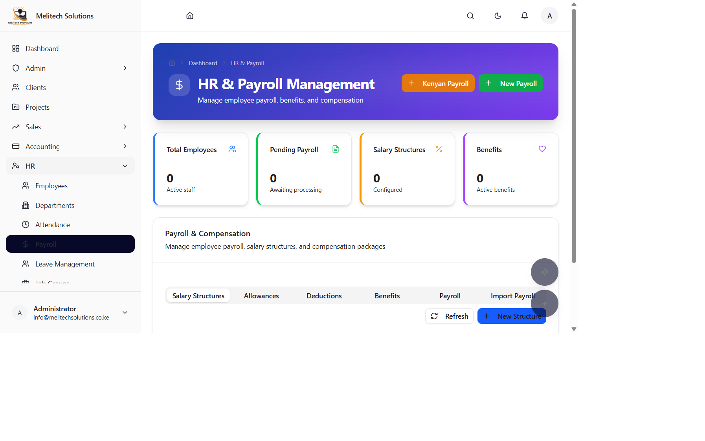
Configure leave types (annual, sick, maternity, paternity, compassionate), track balances, and process approval workflows.
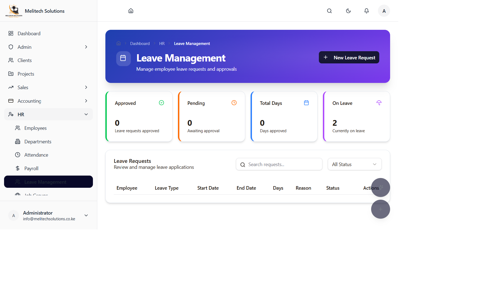
Manage organisational departments with head assignments, budget allocations, and employee counts per department.
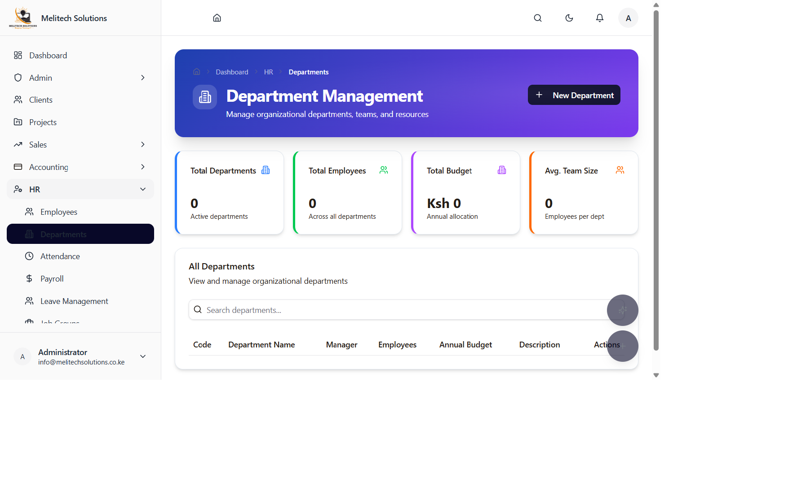
| Sub-Module | Route | Key Features |
|---|---|---|
| Employees | /employees | CRUD, document uploads, role assignment |
| Departments | /departments | Department hierarchy, head assignment |
| Attendance | /attendance | Clock in/out, overtime, reports |
| Payroll | /payroll | Processing, KE calculator, payslips |
| Leave Management | /leave-management | Requests, approvals, balances |
| Job Groups | /job-groups | Grades, salary structures, bands |
| Performance Reviews | /performance-reviews | Review cycles, goals, ratings |
Manage the complete procurement lifecycle from supplier management through purchase ordering, goods receipt, and inventory tracking.
Maintain a supplier registry with contact details, payment terms, rating scores, and purchase history.
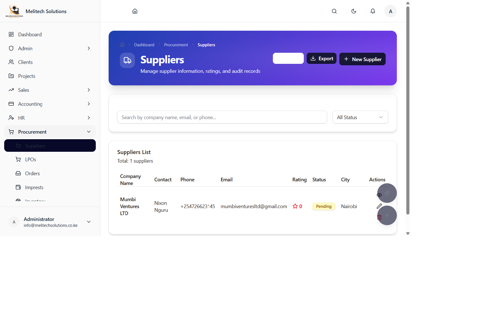
Centralised procurement command centre with overview of pending orders, supplier performance, LPO status, and inventory alerts.
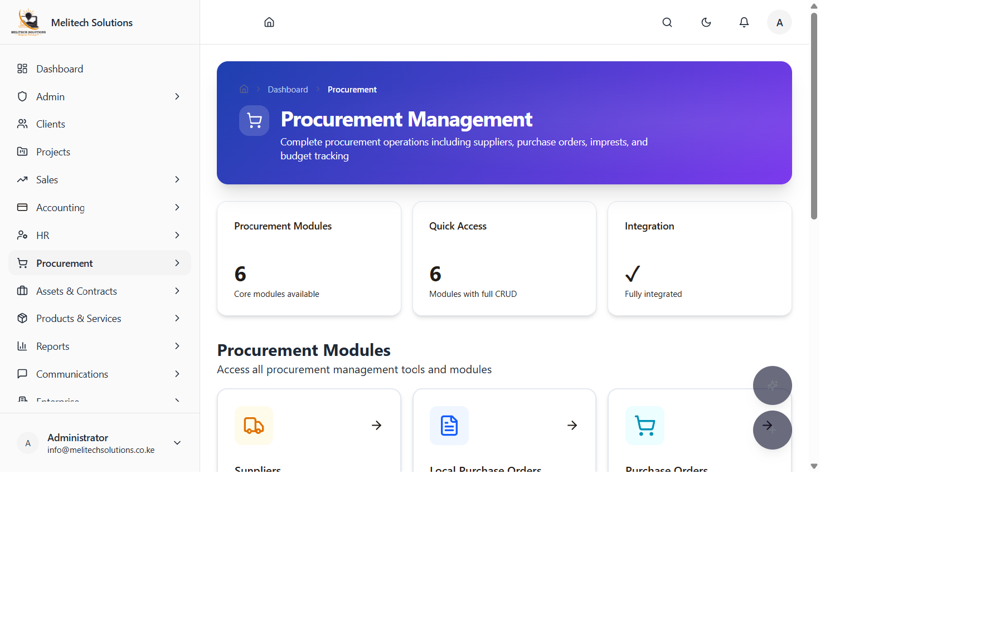
| Module | Route | Description |
|---|---|---|
| Suppliers | /suppliers | Supplier registry with performance tracking |
| LPOs (Local Purchase Orders) | /lpos | Purchase order creation and approval |
| Orders | /orders | Order management and tracking |
| GRNs (Goods Received Notes) | /grn | Receiving verification against POs |
| Inventory | /inventory | Stock levels, reorder alerts, warehouse management |
| Delivery Notes | /delivery-notes | Outgoing delivery documentation |
| Imprests | /imprests | Petty cash and imprest management |
Track projects from inception to completion with milestones, task assignments, time logging, work orders, and project-specific invoicing.
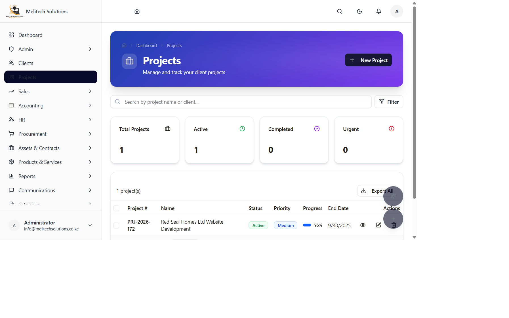
| Feature | Route |
|---|---|
| All Projects | /projects |
| Project Milestones | /project-milestones |
| Time Tracking | /time-tracking |
| Work Orders | /work-orders |
| Service Invoices | /service-invoices |
| Service Templates | /service-templates |
Catalogue your products and services with pricing, categories, stock management, and linkage to invoices and estimates.
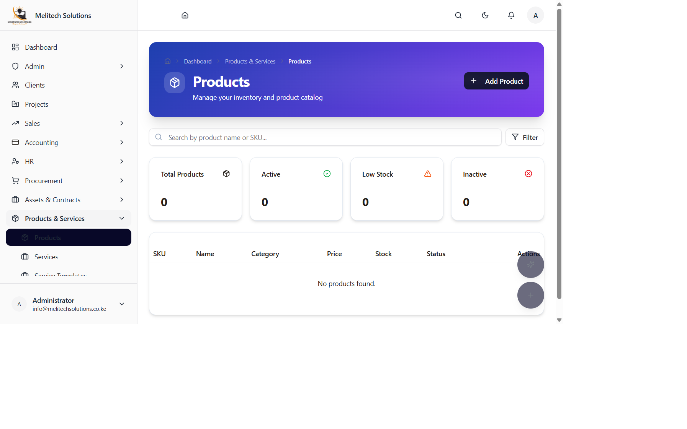
| Feature | Description |
|---|---|
| Product Catalogue | Searchable inventory of physical and digital products |
| Service Catalogue | Service offerings with hourly/fixed pricing |
| Service Templates | Reusable service bundles for quoting and invoicing |
| Category Management | Hierarchical categorisation with tags |
| Pricing Management | Cost price, selling price, markup calculation |
| Stock Tracking | Quantity on hand, reorder levels, stock alerts |
| Invoice Integration | Select products/services directly when creating invoices |
Unified communications hub for email, SMS, in-app notifications, support tickets, team chat, and AI-powered assistance.
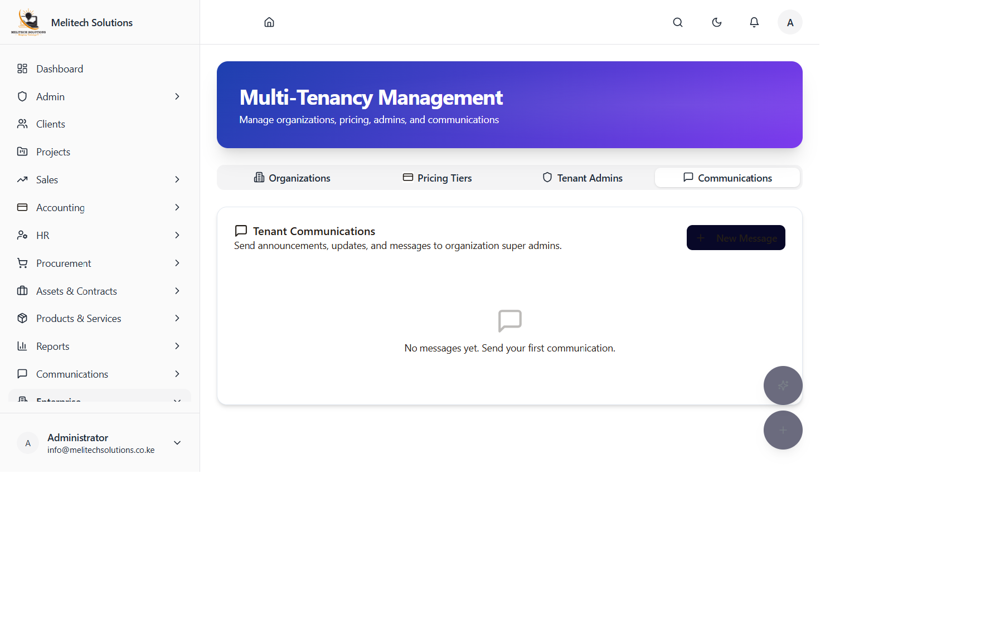
Internal and client-facing ticket system with priority levels, assignment, SLA tracking, and resolution workflows.
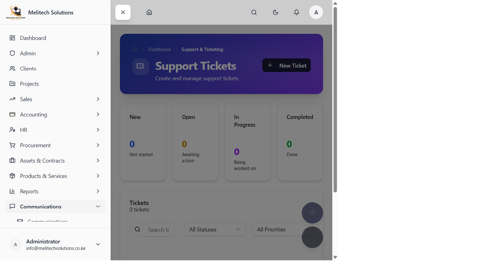
Centralised document repository for storing, organising, and sharing files across all modules. Supports version control and access permissions.
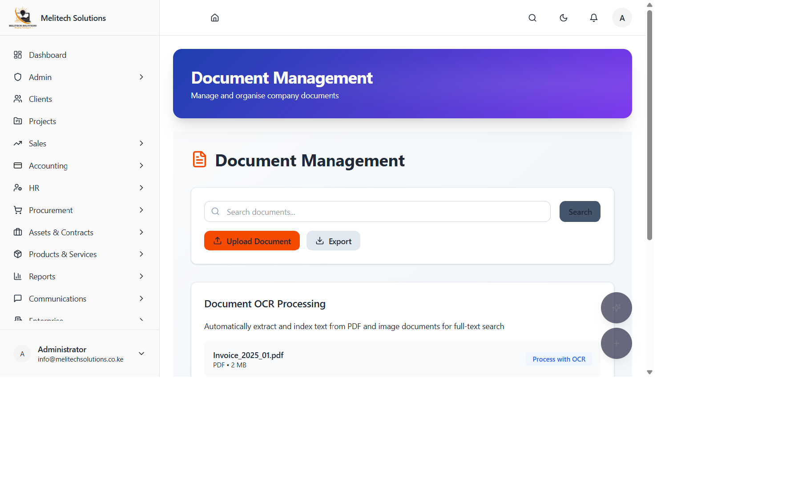
| Channel | Route | Description |
|---|---|---|
| Communications Hub | /communications | Unified inbox for email and SMS |
| Support Tickets | /tickets | Issue tracking and resolution |
| Notifications | /notifications | In-app notification centre |
| Team Chat | /staff-chat | Real-time messaging between staff |
| AI Assistant | /ai-hub | AI-powered help and automation |
| Email Queue | /admin/email-queue | Email delivery queue management |
| SMS Queue | /admin/sms-queue | SMS delivery queue management |
Comprehensive reporting across all modules with interactive charts, exportable tables, custom report builder, and KPI dashboards.
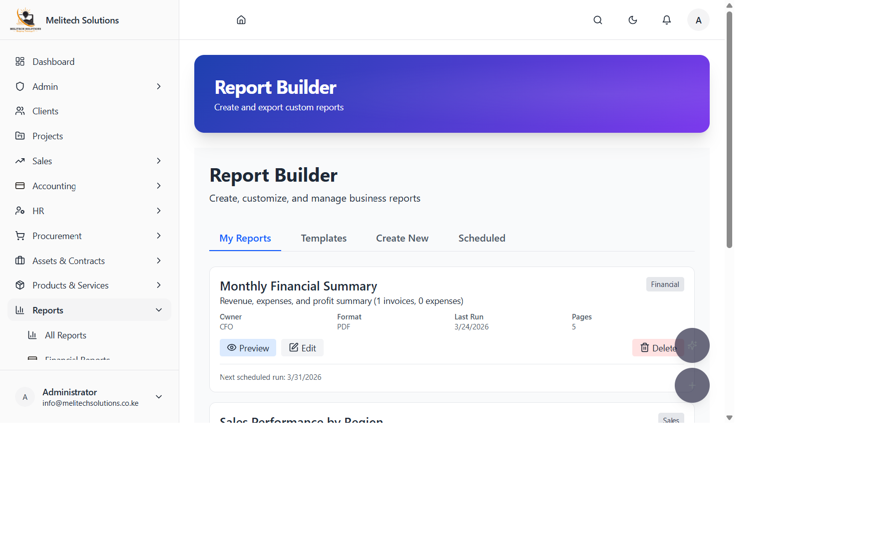
| Category | Reports Available | Route |
|---|---|---|
| Financial Reports | P&L, Balance Sheet, Cash Flow, Trial Balance, Tax Reports | /financial-dashboard |
| Sales Reports | Revenue by period, Client revenue, Pipeline analysis, Conversion rates | /reports/sales |
| HR Analytics | Headcount, Attrition, Attendance rates, Payroll costs, Leave utilisation | /hr-analytics |
| Project Analytics | Budget variance, Timeline adherence, Resource utilisation, Profitability | /project-analytics |
| Advanced Analytics | Custom queries, cross-module data, trend analysis | /advanced-analytics |
| KPI Tracking | Configurable KPI dashboards with target tracking | /kpi-tracking |
| Report Builder | Drag-and-drop custom report creation | /report-builder |
| Revenue Forecasting | AI-assisted revenue predictions | /reports/revenue |
| Conversion Analytics | Lead-to-client conversion funnel analysis | /reports/conversion |
| Activity Trail | Full audit log of all system actions | /activity-trail |
High-level business intelligence dashboard with cross-module KPIs, trend charts, and performance summaries for executive review.
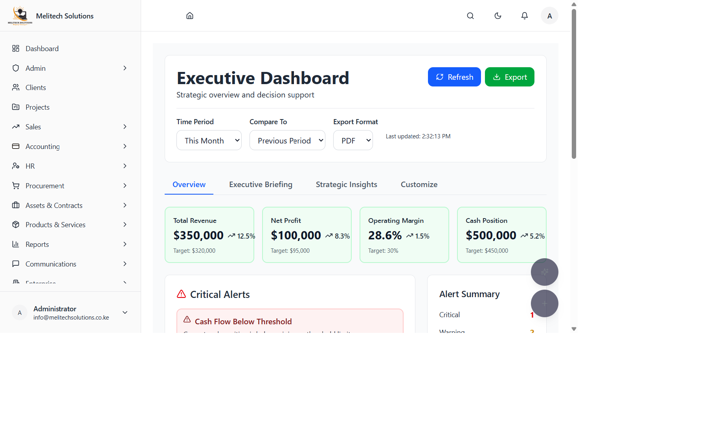
AI-powered analytics providing predictive insights, anomaly detection, revenue forecasting, and intelligent recommendations across all business data.
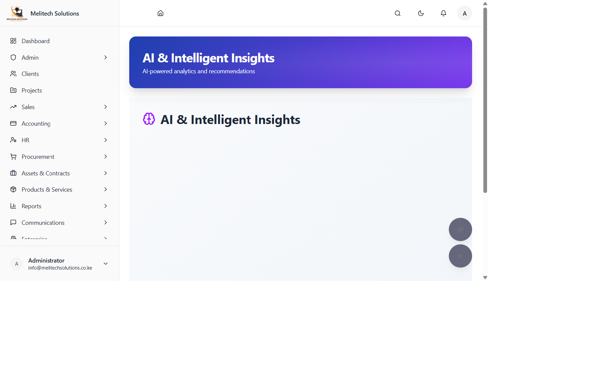
The Enterprise Multi-Tenancy system enables a single Melitech CRM instance to serve multiple organisations — each with isolated data, configurable module access, dedicated super admin accounts, and tailored pricing tiers.
Create and manage tenant organisations with dedicated settings, user limits, and module access controls.
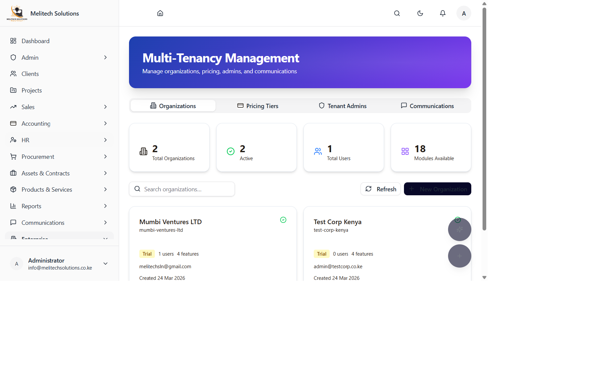
New organisations are created with a compulsory super admin assignment — either creating a new user or assigning an existing one. This ensures every tenant has an accountable administrator from day one.
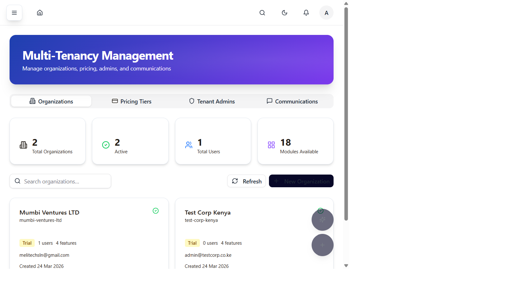
Centralised view of all tenant administrator accounts with organisation affiliation, contact details, and quick action links.
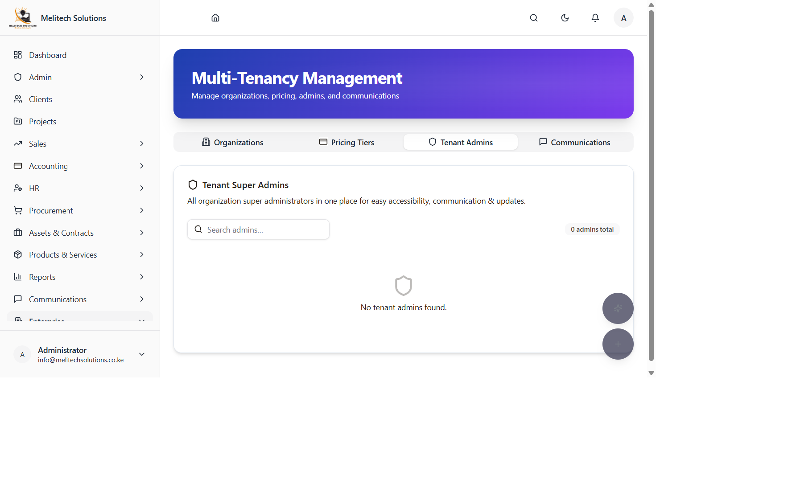
Broadcast messaging system for platform administrators to communicate with tenant super admins. Supports priority levels (Low, Normal, High, Urgent) and targeting (all admins, specific organisation, or specific user).
| Table | Purpose | Key Columns |
|---|---|---|
| organizations | Tenant registry | id, name, slug, plan, isActive, maxUsers, contactEmail |
| organization_features | Per-org module toggles | organizationId, featureKey, isEnabled, config |
| pricing_tier_features | Tier-level defaults | tier, featureKey, isEnabled |
| tenant_messages | Admin communications | senderId, subject, content, priority, targetType |
Configure which CRM modules are available at each pricing tier. Pricing tiers act as templates — when an organisation is assigned a tier, it inherits the tier's default feature flags.
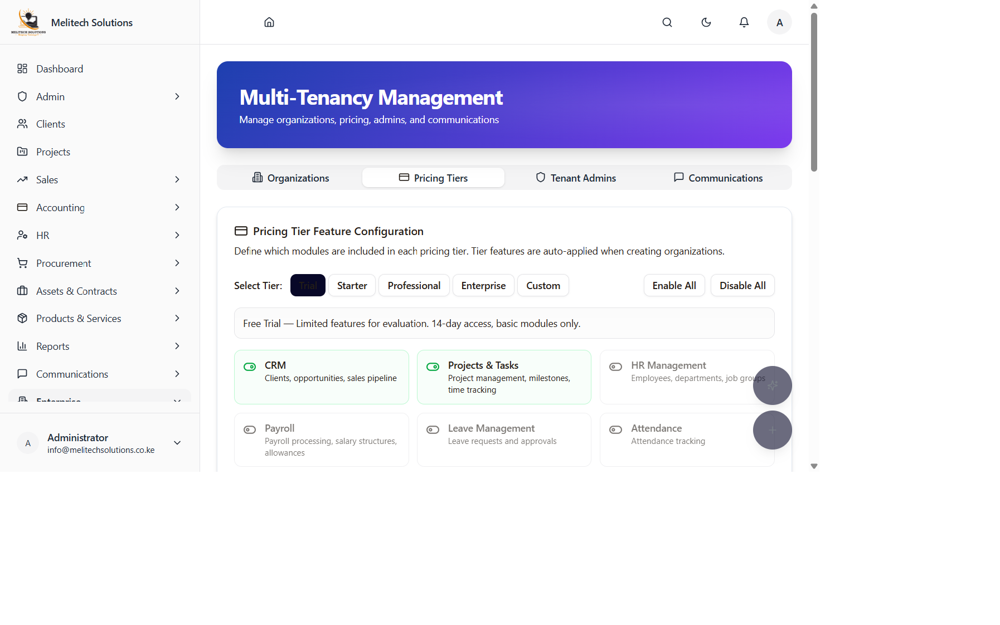
| Module / Feature | Trial | Starter | Professional | Enterprise | Custom |
|---|---|---|---|---|---|
| CRM (Clients) | ✓ | ✓ | ✓ | ✓ | ✓ |
| Invoicing | ✓ | ✓ | ✓ | ✓ | ✓ |
| Payments | ✗ | ✓ | ✓ | ✓ | ✓ |
| Expenses | ✗ | ✓ | ✓ | ✓ | ✓ |
| Chart of Accounts | ✗ | ✗ | ✓ | ✓ | ✓ |
| HR Management | ✗ | ✗ | ✓ | ✓ | ✓ |
| Payroll (KE Compliant) | ✗ | ✗ | ✓ | ✓ | ✓ |
| Procurement | ✗ | ✗ | ✓ | ✓ | ✓ |
| Project Management | ✗ | ✓ | ✓ | ✓ | ✓ |
| Reports & Analytics | ✗ | ✗ | ✓ | ✓ | ✓ |
| Report Builder | ✗ | ✗ | ✗ | ✓ | ✓ |
| Multi-Tenancy | ✗ | ✗ | ✗ | ✓ | ✓ |
| AI Assistant | ✗ | ✗ | ✗ | ✓ | ✓ |
| Workflow Automation | ✗ | ✗ | ✗ | ✓ | ✓ |
| Custom Fields | ✗ | ✓ | ✓ | ✓ | ✓ |
| Integrations (Stripe/M-Pesa) | ✗ | ✗ | ✓ | ✓ | ✓ |
| Max Users | 5 | 15 | 50 | Unlimited | Custom |
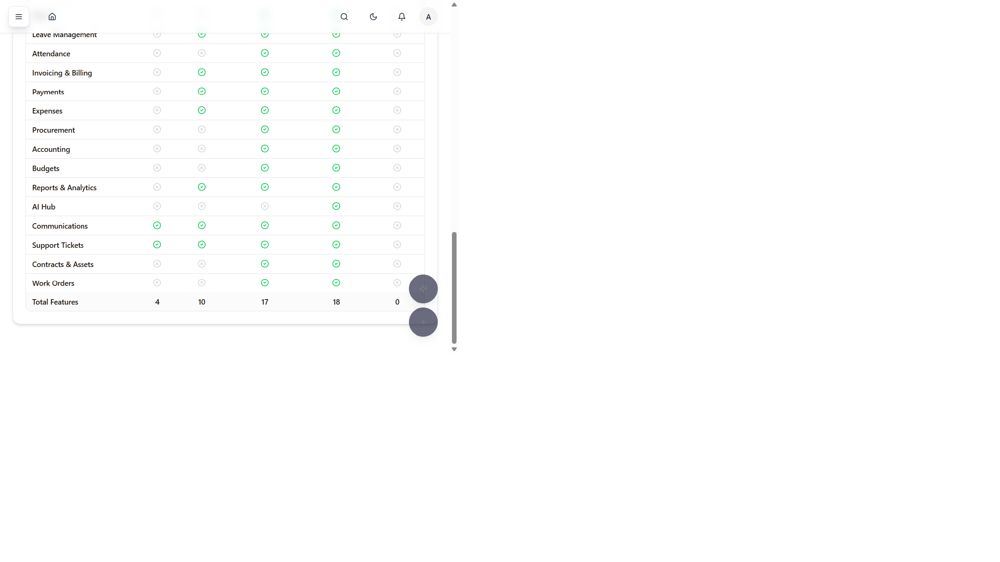
System administration tools for platform configuration, customisation, data management, and monitoring.
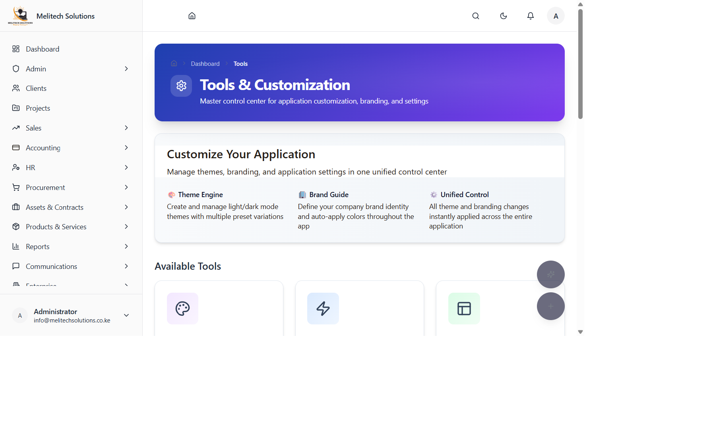
Complete audit log of all user actions and system events. Track who changed what, when, and from which IP address for compliance and security auditing.
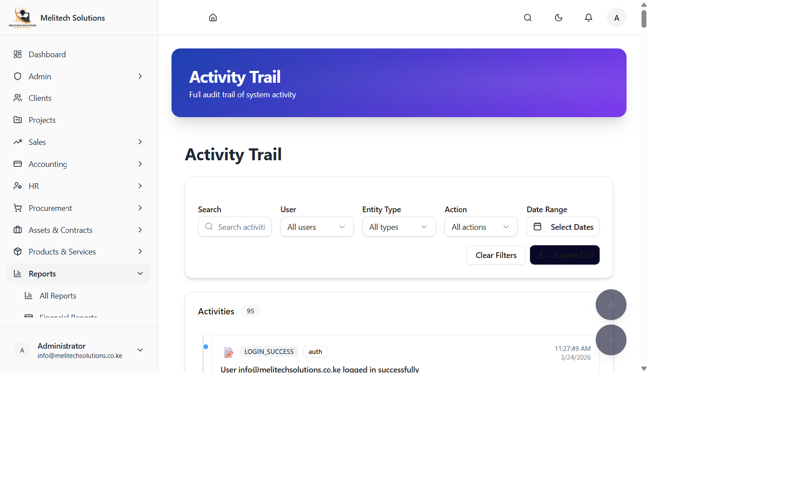
Real-time system monitoring dashboard showing server status, database performance, API response times, and resource utilisation.
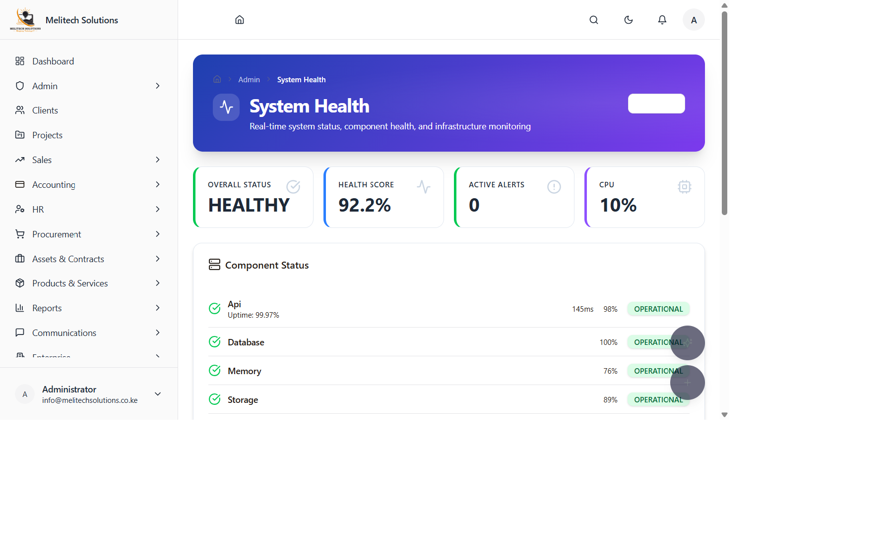
| Tool | Route | Description |
|---|---|---|
| System Settings | /tools/system-settings | Global configuration: company info, locale, currency, date format |
| Maintenance Mode | /tools/system-settings | Enable/disable maintenance mode with custom messaging |
| Backup & Restore | /admin/backups | Database backup, scheduled backups, point-in-time restore |
| Theme Customisation | /tools/theme-customization | Colour scheme, fonts, sidebar style, dark mode |
| Brand Customisation | /tools/brand-customization | Logo, company name, branding across all pages |
| Custom Fields | /tools/custom-fields | 14+ field types, entity-specific, validation rules |
| Homepage Builder | /tools/homepage-builder | Drag-and-drop landing page configuration |
| Import Data | /import-excel | Excel/CSV import with column mapping |
| Workflow Automation | /automation | Trigger-based automated actions and notifications |
| System Health | /system-health | Server status, database health, API response times |
| Integrations | /integrations | Third-party service connections (Stripe, M-Pesa, email, SMS) |
| Email Queue | /admin/email-queue | Monitor and manage outgoing email delivery |
| SMS Queue | /admin/sms-queue | Monitor and manage outgoing SMS delivery |
| Search | /search | Global search across all modules |
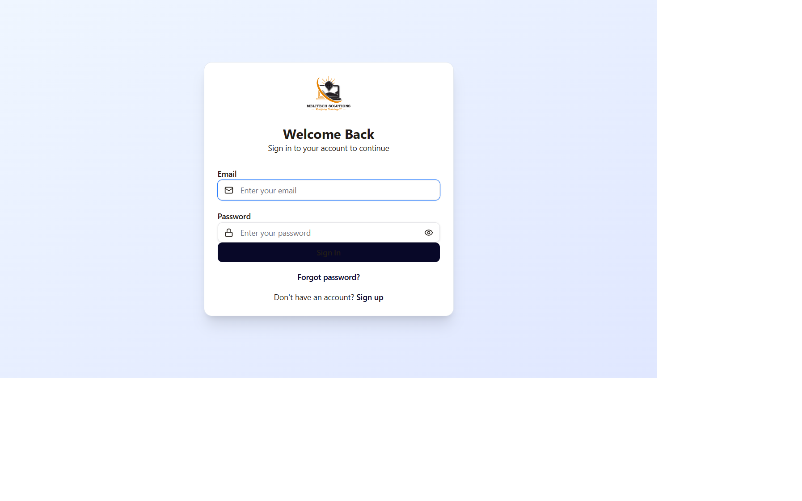
| Feature | Implementation |
|---|---|
| Password Hashing | bcryptjs with 10 salt rounds |
| Session Management | JWT (JSON Web Tokens) with configurable expiry |
| Route Protection | AuthGate component wrapping all private routes |
| CORS Policy | Strict origin validation for cross-origin requests |
| Input Validation | Zod v4 schemas on all API inputs (server-side) |
| SQL Injection Prevention | Parameterised queries via Drizzle ORM |
| XSS Prevention | React DOM escaping + Content Security Policy |
| Password Reset | Token-based reset with email verification |
| Session Timeout | Automatic logout after inactivity period |
| Audit Logging | Activity trail for all state-changing operations |
Dedicated security management interface for running audits, reviewing access logs, managing encryption settings, and monitoring compliance status.
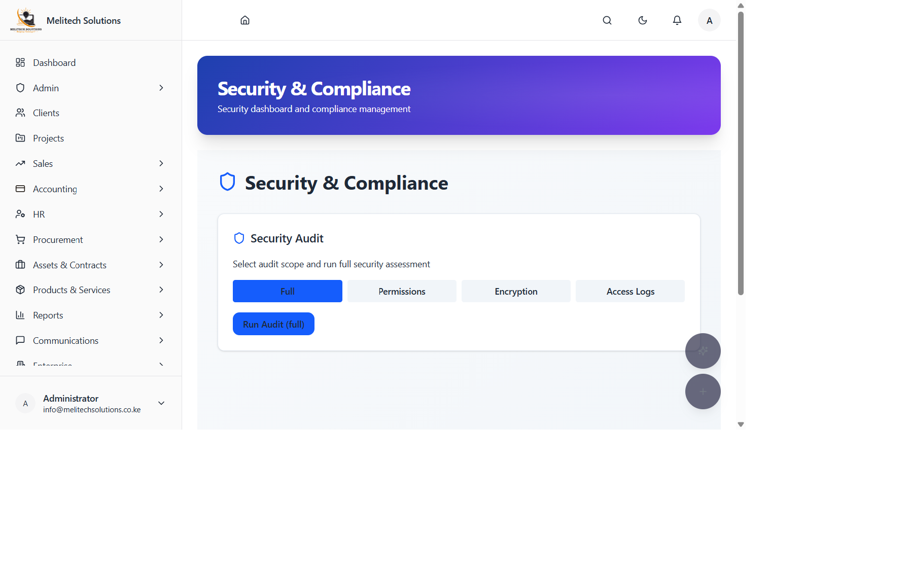
| Page | Route | Purpose |
|---|---|---|
| Login | /login | Email + password authentication |
| Sign Up | /signup | New user registration |
| Forgot Password | /forgot-password | Password reset request |
| Reset Password | /reset-password | Token-based password reset |
Melitech CRM implements granular role-based access control (RBAC) with 150+ frontend permissions and 85+ backend permissions enforced at both the UI and API levels.
| Role | Access Level | Typical Users |
|---|---|---|
| super_admin | Full platform access + Enterprise features | Platform owner, CTO |
| admin | Full module access, user management | Office manager, department heads |
| manager | Module-specific management + reports | Sales manager, HR manager |
| hr | HR module, employees, payroll, attendance | HR officers |
| accountant | Finance, invoicing, payments, expenses | Finance team |
| project_manager | Projects, milestones, work orders, time tracking | Project leads |
| procurement_manager | Procurement, suppliers, LPOs, inventory | Procurement officers |
| sales_manager | Sales, pipeline, clients, invoices | Sales team leads |
| staff | Limited access to assigned modules | General staff |
| client | Client portal: own invoices, projects, tickets | External clients |
| ict_manager | System tools, tickets, integrations | IT administrators |
Melitech CRM integrates with external services for payments, communications, and data exchange.
| Provider | Type | Capabilities |
|---|---|---|
| Stripe | Card Payments | One-time charges, recurring billing, webhook notifications, refunds |
| M-Pesa (Safaricom) | Mobile Money | STK Push payments, payment confirmations, Kenyan phone validation |
| Service | Purpose | Features |
|---|---|---|
| Email (SMTP / SendGrid) | Email notifications | Template-based emails, queue management, delivery tracking |
| Africa's Talking | SMS notifications | Bulk SMS, delivery reports, Kenyan phone validation |
All API endpoints use tRPC v11 with end-to-end TypeScript type safety. The API supports:
Melitech CRM ships as a Docker multi-container application with the following services:
| Container | Image | Port | Purpose |
|---|---|---|---|
| melitech_crm_app | Custom (Node.js) | 3000 | Application server (frontend + backend) |
| melitech_crm_db | MySQL 8.0 | 3307 | Database server with persistent volume |
The platform uses Drizzle ORM's migration system with 52 sequential migrations:
| Migration Range | Content |
|---|---|
| 0000 – 0030 | Core tables (users, clients, invoices, payments, expenses, employees, etc.) |
| 0031 – 0040 | Procurement, projects, services, receipts, custom fields |
| 0041 – 0048 | Advanced features (approvals, contracts, warranties, attendance) |
| 0049 – 0051 | Docker deployment fixes, MySQL syntax corrections, Zod compatibility |
| 0052 | Multi-tenancy (tenant_messages, pricing_tier_features) |
| Variable | Description |
|---|---|
| DATABASE_URL | MySQL connection string |
| JWT_SECRET | Secret for JWT token signing |
| STRIPE_SECRET_KEY | Stripe API secret key |
| STRIPE_PUBLISHABLE_KEY | Stripe publishable key |
| MPESA_CONSUMER_KEY | M-Pesa API consumer key |
| MPESA_CONSUMER_SECRET | M-Pesa API consumer secret |
| EMAIL_HOST / EMAIL_PORT | SMTP server configuration |
| AT_API_KEY / AT_USERNAME | Africa's Talking SMS credentials |
| NODE_ENV | production / development |
| # | Module | Route | Type |
|---|---|---|---|
| 1 | Landing Page | / | Public |
| 2 | Login | /login | Auth |
| 3 | Sign Up | /signup | Auth |
| 4 | Forgot Password | /forgot-password | Auth |
| 5 | Dashboard Home | /crm | Protected |
| 6 | Super Admin Dashboard | /crm/super-admin | Protected |
| 7 | Admin Dashboard | /crm/admin | Protected |
| 8 | HR Dashboard | /crm/hr | Protected |
| 9 | Accountant Dashboard | /crm/accountant | Protected |
| 10 | PM Dashboard | /crm/project-manager | Protected |
| 11 | Clients | /clients | Protected |
| 12 | Create Client | /clients/create | Protected |
| 13 | Projects | /projects | Protected |
| 14 | Create Project | /projects/create | Protected |
| 15 | Invoices | /invoices | Protected |
| 16 | Create Invoice | /invoices/create | Protected |
| 17 | Estimates | /estimates | Protected |
| 18 | Quotations | /quotations | Protected |
| 19 | Receipts | /receipts | Protected |
| 20 | Opportunities | /opportunities | Protected |
| 21 | Sales Pipeline | /sales-pipeline | Protected |
| 22 | Credit Notes | /credit-notes | Protected |
| 23 | Debit Notes | /debit-notes | Protected |
| 24 | Payments | /payments | Protected |
| 25 | Payment Plans | /payment-plans | Protected |
| 26 | Expenses | /expenses | Protected |
| 27 | Chart of Accounts | /chart-of-accounts | Protected |
| 28 | Bank Reconciliation | /bank-reconciliation | Protected |
| 29 | Budgets | /budgets | Protected |
| 30 | Financial Dashboard | /financial-dashboard | Protected |
| 31 | Tax Compliance | /payroll/tax-compliance | Protected |
| 32 | Forecasting | /forecasting | Protected |
| 33 | Billing | /billing | Protected |
| 34 | Employees | /employees | Protected |
| 35 | Departments | /departments | Protected |
| 36 | Attendance | /attendance | Protected |
| 37 | Payroll | /payroll | Protected |
| 38 | Leave Management | /leave-management | Protected |
| 39 | Job Groups | /job-groups | Protected |
| 40 | Performance Reviews | /performance-reviews | Protected |
| 41 | Suppliers | /suppliers | Protected |
| 42 | LPOs | /lpos | Protected |
| 43 | Orders | /orders | Protected |
| 44 | GRNs | /grn | Protected |
| 45 | Inventory | /inventory | Protected |
| 46 | Delivery Notes | /delivery-notes | Protected |
| 47 | Imprests | /imprests | Protected |
| 48 | Products | /products | Protected |
| 49 | Services | /services | Protected |
| 50 | Service Templates | /service-templates | Protected |
| 51 | Assets | /assets | Protected |
| 52 | Contracts | /contracts | Protected |
| 53 | Warranty | /warranty | Protected |
| 54 | Work Orders | /work-orders | Protected |
| 55 | Reports | /reports | Protected |
| 56 | Report Builder | /report-builder | Protected |
| 57 | KPI Tracking | /kpi-tracking | Protected |
| 58 | Activity Trail | /activity-trail | Protected |
| 59 | Communications | /communications | Protected |
| 60 | Tickets | /tickets | Protected |
| 61 | Team Chat | /staff-chat | Protected |
| 62 | AI Assistant | /ai-hub | Protected |
| 63 | Multi-Tenancy | /enterprise/tenants | Enterprise |
| 64 | Tenant Admins | /enterprise/tenant-admins | Enterprise |
| 65 | Pricing Tiers | /enterprise/pricing | Enterprise |
| 66 | Tenant Comms | /enterprise/tenant-comms | Enterprise |
| 67 | Settings | /settings | Protected |
| 68 | Custom Fields | /tools/custom-fields | Protected |
| 69 | Theme Customisation | /tools/theme-customization | Protected |
| 70 | Import Data | /import-excel | Protected |
| Router | Procedures | Module |
|---|---|---|
| auth | login, register, forgotPassword, resetPassword, me | Authentication |
| clients | list, get, create, update, delete, bulkDelete, export | CRM |
| invoices | list, get, create, update, delete, send, markPaid | Sales |
| payments | list, get, create, update, delete, reconcile | Accounting |
| expenses | list, get, create, update, delete, approve | Accounting |
| employees | list, get, create, update, delete, getByDepartment | HR |
| payroll | list, process, getPayslip, kenyanCalculation | HR |
| attendance | list, clockIn, clockOut, getByDate, report | HR |
| leave | list, request, approve, reject, getBalance | HR |
| projects | list, get, create, update, delete, getAnalytics | Projects |
| suppliers | list, get, create, update, delete | Procurement |
| products | list, get, create, update, delete | Products |
| multiTenancy | listOrgs, createOrgWithAdmin, updateOrg, pricingTiers, tenantComms | Enterprise |
| reports | financial, sales, hr, project, custom | Reports |
| stripe | createPaymentIntent, webhook, getBalance | Integrations |
| mpesa | stkPush, callback, getStatus | Integrations |
| Figure | File | Description |
|---|---|---|
| 1.1 | 16_landing.png | Landing Page |
| 3.1 | 02_super_admin_dashboard.png | Super Admin Dashboard |
| 4.1 | 03_clients.png | Clients Management |
| 5.1 | 04_invoices.png | Invoice Management |
| 6.1 | 21_accounting.png | Chart of Accounts |
| 6.2 | 07_payments.png | Payments |
| 6.3 | 14_expenses.png | Expenses |
| 7.1 | 06_employees.png | Employees |
| 7.2 | 15_attendance.png | Attendance |
| 7.3 | 22_payroll.png | Payroll |
| 7.4 | 20_leave.png | Leave Management |
| 8.1 | 11_suppliers.png | Suppliers |
| 9.1 | 05_projects.png | Projects |
| 10.1 | 17_products.png | Products |
| 11.1 | 10_communications.png | Communications |
| 11.2 | 23_tickets.png | Support Tickets |
| 12.1 | 12_reports.png | Reports Hub |
| 13.1 | 08_multitenancy.png | Multi-Tenancy |
| 13.2 | 24_create_org.png | Create Organisation |
| 13.3 | 18_tenant_admins.png | Tenant Admins |
| 13.4 | 19_tenant_comms.png | Tenant Communications |
| 14.1 | 09_pricing_tiers.png | Pricing Tiers |
| 14.2 | 25_tier_comparison.png | Tier Comparison |
| 15.1 | 13_settings.png | Settings |
| 16.1 | 01_login.png | Login Page |